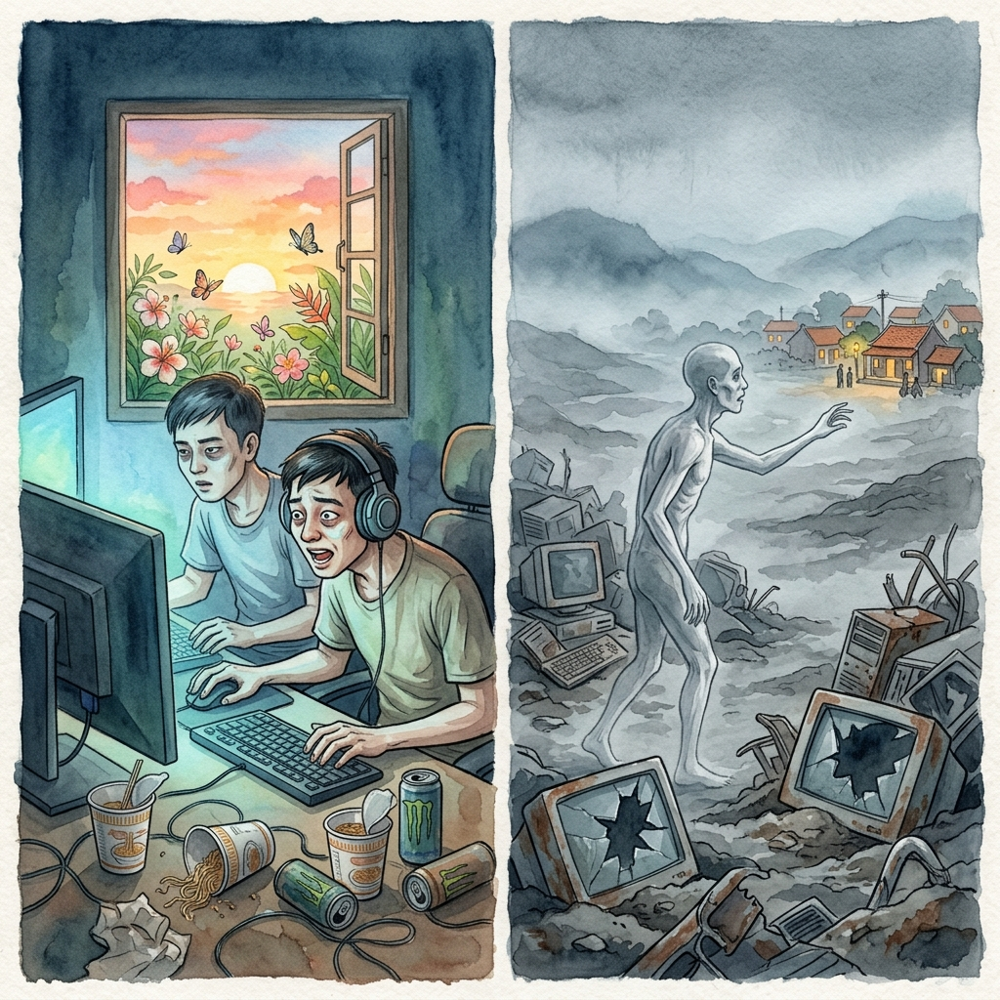
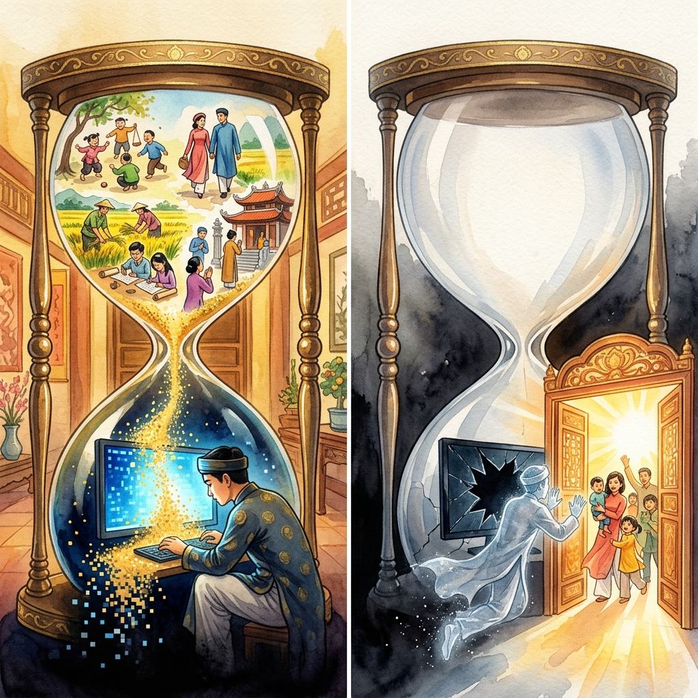
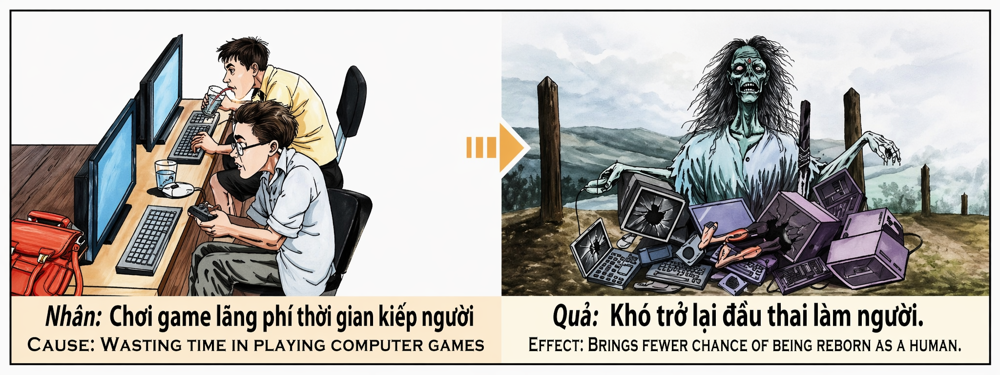

El Reloj de Arena VacíoThe Empty HourglassLa Clessidra Vuota空空的沙漏الساعة الرملية الفارغةПустые песочные часыDie Leere SanduhrLe Sablier Vide空の砂時計A Ampulheta VaziaĐồng Hồ Cát Rỗng
Quien consume su existencia humana entregado a la pantalla de un juego — quien deja pasar los años como arena digital entre los dedos mientras la vida real florece y se marchita al otro lado de la ventana — está vaciando, sin saberlo, el reloj de arena más precioso que el karma puede otorgar: el de la reencarnación humana. Porque cada hora invertida en mundos virtuales que no alimentan el alma es una hora sustraída del banco de méritos que determina si, al morir, volveremos a nacer como seres humanos o quedaremos atrapados en formas inferiores de conciencia. Whoever consumes their human existence surrendered to a game screen — who lets the years pass like digital sand through their fingers while real life blooms and withers on the other side of the window — is emptying, unknowingly, the most precious hourglass karma can bestow: that of human reincarnation. For every hour invested in virtual worlds that do not feed the soul is an hour subtracted from the merit bank that determines whether, upon death, we will be reborn as human beings or remain trapped in lower forms of consciousness. Chi consuma la propria esistenza umana arrendendosi allo schermo di un gioco sta svuotando, senza saperlo, la clessidra più preziosa che il karma possa concedere: quella della reincarnazione umana. Perché ogni ora investita in mondi virtuali che non nutrono l'anima è un'ora sottratta al conto dei meriti che determina se, alla morte, rinasceremo come esseri umani. 将人生交给游戏屏幕的人——任由岁月如数字沙粒从指间滑落，而真实的生活在窗外盛开又凋零——正在不知不觉中倒空业力能赐予的最珍贵的沙漏：人身再生的沙漏。因为每一小时投入不滋养灵魂的虚拟世界，就是从决定我们死后能否重新投胎为人的功德银行中扣除一小时。 من يستنفد وجوده البشري مستسلماً لشاشة لعبة — من يترك السنين تنسكب كرمال رقمية بين أصابعه — يُفرغ دون أن يدري أثمن ساعة رملية يمكن للكارما أن تمنحها: ساعة التناسخ البشري. Кто расходует своё человеческое существование, отдавшись экрану игры — кто позволяет годам утекать как цифровому песку — опустошает, сам того не зная, самые драгоценные песочные часы, которые карма может даровать: часы человеческого перерождения. Wer seine menschliche Existenz einem Spielbildschirm hingegeben verbringt — wer die Jahre wie digitalen Sand durch die Finger rinnen lässt — leert, ohne es zu wissen, die kostbarste Sanduhr, die das Karma verleihen kann: die der menschlichen Wiedergeburt. Celui qui consume son existence humaine livré à l'écran d'un jeu — qui laisse les années couler comme du sable numérique entre ses doigts — vide, sans le savoir, le sablier le plus précieux que le karma puisse accorder : celui de la réincarnation humaine. ゲーム画面に人生を費やす者は、知らないうちにカルマが与えうる最も貴重な砂時計を空にしています：人間としての転生の砂時計です。魂を養わない仮想世界に費やすすべての時間は、死後に人間として生まれ変われるかどうかを決める功徳の銀行から差し引かれる一時間なのです。 Quem consome a sua existência humana entregue ao ecrã de um jogo — quem deixa os anos passarem como areia digital entre os dedos — está a esvaziar, sem saber, a ampulheta mais preciosa que o karma pode conceder: a da reencarnação humana. Kẻ tiêu tốn kiếp người giao cho màn hình trò chơi — để năm tháng trôi như cát số qua kẽ tay trong khi cuộc đời thật nở rồi tàn bên kia cửa sổ — đang trút cạn, mà chẳng hề hay biết, chiếc đồng hồ cát quý giá nhất mà nhân quả có thể ban: đồng hồ tái sinh làm người.
El tiempo es, en la economía del karma, la moneda más valiosa y más escasa. No se puede ganar más, no se puede pedir prestado, no se puede robar. Cada ser humano recibe al nacer un depósito finito de horas — y lo que haga con ellas determinará no solo la calidad de esta vida, sino la forma de la siguiente. Hay quien invierte su tiempo en amar, en construir, en aprender, en ayudar. Y hay quien lo vierte, como agua limpia en un desagüe, en la hipnosis de una pantalla que parpadea y nunca se cansa.
El adicto a los videojuegos no comete un crimen visible. No roba, no hiere, no miente (al menos no a otros). Pero comete algo que el karma considera quizá más trágico que el mal activo: el desperdicio del don supremo. La vida humana es, según las tradiciones budistas que inspiraron estos murales, extraordinariamente rara. Se dice que la probabilidad de nacer como ser humano es comparable a la de una tortuga ciega que, emergiendo del fondo del océano una vez cada cien años, introduzca la cabeza exactamente por el aro de un yugo que flota a la deriva. Así de improbable es este regalo. Y quien lo recibe y decide gastarlo mirando una pantalla dieciocho horas al día, comiendo fideos instantáneos, durmiendo sobre el teclado y dejando que su cuerpo y su mente se pudran en una habitación oscura, está devolviendo el regalo sin abrir.
El karma de esta acción es devastador en su simetría: quien no aprovechó la experiencia humana no la recibirá de nuevo. No por castigo — el karma no castiga — sino por pura mecánica. Si no sembras nada durante toda una cosecha, ¿qué recogerás la próxima? El alma que pasó una vida entera en mundos virtuales llega al momento de la muerte con la cuenta vacía: sin méritos de compasión, sin actos de generosidad, sin aprendizaje real, sin conexiones humanas profundas. Y la rueda del samsara, que distribuye los renacimientos según el peso de los actos, la enviará a una forma inferior — no por crueldad, sino porque no tiene peso suficiente para sostenerse en el plano humano. El reloj de arena se ha vaciado. Y no queda ni un grano para comprar un nuevo comienzo.
Time is, in the economy of karma, the most valuable and scarce currency. You cannot earn more, cannot borrow it, cannot steal it. Every human being receives at birth a finite deposit of hours — and what they do with those hours will determine not only the quality of this life but the shape of the next. Some invest their time in loving, in building, in learning, in helping. Others pour it, like clean water down a drain, into the hypnosis of a blinking screen that never tires.
The videogame addict commits no visible crime. They do not steal, do not wound, do not lie (at least not to others). But they commit something that karma considers perhaps more tragic than active evil: the waste of the supreme gift. Human life is, according to the Buddhist traditions that inspired these murals, extraordinarily rare. It is said that the probability of being born as a human being is comparable to that of a blind turtle that, surfacing from the ocean floor once every hundred years, puts its head through the exact hole of a yoke floating adrift. That is how improbable this gift is. And whoever receives it and decides to spend it staring at a screen eighteen hours a day, eating instant noodles, sleeping on the keyboard, and letting their body and mind rot in a dark room, is returning the gift unopened.
The karma of this action is devastating in its symmetry: whoever did not make use of the human experience will not receive it again. Not as punishment — karma does not punish — but through pure mechanics. If you sow nothing during an entire harvest, what will you reap next? The soul that spent an entire life in virtual worlds arrives at the moment of death with an empty account: no merits of compassion, no acts of generosity, no real learning, no deep human connections. And the wheel of samsara, which distributes rebirths according to the weight of actions, will send it to a lower form — not out of cruelty, but because it lacks the weight to sustain itself on the human plane. The hourglass has emptied. And not a single grain remains to purchase a new beginning.
Il tempo è, nell'economia del karma, la moneta più preziosa e più scarsa. Non si può guadagnarne di più, non si può prendere in prestito, non si può rubare. Ogni essere umano riceve alla nascita un deposito finito di ore — e ciò che ne fa determinerà non solo la qualità di questa vita, ma la forma della prossima. C'è chi investe il proprio tempo ad amare, costruire, imparare, aiutare. E c'è chi lo versa, come acqua pulita in uno scarico, nell'ipnosi di uno schermo lampeggiante che non si stanca mai.
Il dipendente dai videogiochi non commette un crimine visibile. Ma commette qualcosa che il karma considera forse più tragico del male attivo: lo spreco del dono supremo. La vita umana è, secondo le tradizioni buddhiste che ispirarono questi murali, straordinariamente rara. Chi la riceve e decide di spenderla fissando uno schermo diciotto ore al giorno, mangiando noodle istantanei e lasciando che corpo e mente marciscano in una stanza buia, sta restituendo il regalo senza aprirlo.
Il karma di questa azione è devastante nella sua simmetria: chi non ha sfruttato l'esperienza umana non la riceverà di nuovo. L'anima che ha trascorso un'intera vita in mondi virtuali arriva al momento della morte con il conto vuoto: senza meriti di compassione, senza atti di generosità, senza apprendimento reale. La ruota del samsara la invierà a una forma inferiore — non per crudeltà, ma perché non ha il peso per sostenersi sul piano umano. La clessidra si è svuotata.
时间是业力经济中最宝贵、最稀缺的货币。你无法赚取更多，无法借用，无法窃取。每个人出生时都会收到一笔有限的时间——用它做什么将决定这一世的质量和下一世的形态。有人把时间投资在爱、建设、学习和帮助上。也有人把它倒掉，像把干净的水倒进下水道一样，沉迷于闪烁屏幕的催眠之中。
沉迷电子游戏的人没有犯下可见的罪行。但他犯下了业力认为可能比主动作恶更可悲的事：挥霍至高的礼物。人身，据启发这些壁画的佛教传统所言，极为稀有。据说转生为人的概率，就像一只盲龟每百年浮出海面一次，恰好将头穿过漂浮的轭木上的孔。收到这份礼物却决定每天盯着屏幕十八小时、吃泡面、趴在键盘上睡觉、让身心在黑暗房间里腐烂的人，是在原封不动地退还礼物。
这种行为的业力在其对称性中是毁灭性的：没有利用人类体验的人不会再得到它。灵魂如果在虚拟世界中度过一生，死亡时账户一空：没有慈悲的功德，没有慷慨的行为，没有真正的学习，没有深层的人际连接。轮回之轮将把它送往低等形态——不是出于残忍，而是因为它没有足够的分量停留在人间。沙漏已经空了。
الوقت في اقتصاد الكارما أثمن عملة وأندرها. لا يمكنك كسب المزيد منه ولا استعارته ولا سرقته. يتلقى كل إنسان عند ولادته وديعة محدودة من الساعات — وما يفعله بها يحدد ليس فقط جودة هذه الحياة بل شكل الحياة التالية. هناك من يستثمر وقته في الحب والبناء والتعلم والمساعدة. وهناك من يسكبه كماء نظيف في مصرف في سحر شاشة تومض لا تتعب أبداً.
مدمن ألعاب الفيديو لا يرتكب جريمة ظاهرة. لكنه يرتكب ما تعتبره الكارما ربما أكثر مأساوية من الشر الفاعل: إهدار الهبة العظمى. الحياة البشرية نادرة بشكل استثنائي وفقاً للتقاليد البوذية. من يتلقى هذه الهبة ويقرر أن يقضيها محملقاً في شاشة ثماني عشرة ساعة يومياً يعيد الهدية دون فتحها.
كارما هذا الفعل مدمرة في تناظرها: من لم يستفد من التجربة البشرية لن يتلقاها مجدداً. الروح التي قضت حياة كاملة في عوالم افتراضية تصل لحظة الموت بحساب فارغ. وعجلة السمسارا ترسلها إلى شكل أدنى — لا قسوة بل لأنها لا تملك الثقل الكافي لتبقى في المستوى البشري. الساعة الرملية فرغت.
Время — самая ценная и скудная валюта в экономике кармы. Его нельзя заработать больше, нельзя одолжить, нельзя украсть. Каждый человек получает при рождении конечный депозит часов — и то, что он с ними делает, определит не только качество этой жизни, но и форму следующей. Кто-то вкладывает время в любовь, созидание, учёбу, помощь. Кто-то выливает его, как чистую воду в канализацию, в гипноз мигающего экрана.
Зависимый от видеоигр не совершает видимого преступления. Но совершает то, что карма, быть может, считает более трагичным, чем активное зло: расточение высшего дара. Человеческая жизнь, согласно буддийским традициям, вдохновившим эти фрески, необычайно редка. Кто получает этот дар и решает потратить его, уставясь в экран по восемнадцать часов в сутки, — возвращает подарок нераспечатанным.
Карма этого деяния разрушительна в своей симметрии: кто не воспользовался человеческим опытом, не получит его снова. Душа, прожившая всю жизнь в виртуальных мирах, приходит к моменту смерти с пустым счётом: без заслуг сострадания, без актов щедрости, без настоящего обучения, без глубоких связей. Колесо сансары отправит её в низшую форму — не из жестокости, а потому что ей не хватает веса удержаться на человеческом плане. Песочные часы опустели.
Zeit ist in der Ökonomie des Karmas die wertvollste und knappste Währung. Man kann sie nicht vermehren, nicht borgen, nicht stehlen. Jeder Mensch erhält bei der Geburt ein endliches Guthaben an Stunden — und was er damit macht, bestimmt nicht nur die Qualität dieses Lebens, sondern die Form des nächsten. Manche investieren ihre Zeit in Lieben, Bauen, Lernen, Helfen. Andere gießen sie, wie sauberes Wasser in den Abfluss, in die Hypnose eines blinkenden Bildschirms.
Der Videospielsüchtige begeht kein sichtbares Verbrechen. Aber er begeht etwas, das das Karma vielleicht als tragischer als aktives Böses betrachtet: die Verschwendung der höchsten Gabe. Das menschliche Leben ist laut den buddhistischen Traditionen außergewöhnlich selten. Wer dieses Geschenk erhält und es damit verbringt, achtzehn Stunden am Tag auf einen Bildschirm zu starren, gibt das Geschenk ungeöffnet zurück.
Das Karma dieser Handlung ist verheerend in seiner Symmetrie: Wer die menschliche Erfahrung nicht genutzt hat, wird sie nicht wieder erhalten. Die Seele, die ein ganzes Leben in virtuellen Welten verbrachte, kommt im Moment des Todes mit leerem Konto an. Das Rad des Samsara wird sie in eine niedrigere Form senden — nicht aus Grausamkeit, sondern weil ihr das Gewicht fehlt, sich auf der menschlichen Ebene zu halten. Die Sanduhr ist leer.
Le temps est, dans l'économie du karma, la monnaie la plus précieuse et la plus rare. On ne peut en gagner davantage, ni l'emprunter, ni le voler. Chaque être humain reçoit à la naissance un dépôt fini d'heures — et ce qu'il en fait déterminera non seulement la qualité de cette vie, mais la forme de la suivante. Certains investissent leur temps à aimer, construire, apprendre, aider. D'autres le déversent, comme de l'eau propre dans un égout, dans l'hypnose d'un écran clignotant.
L'accro aux jeux vidéo ne commet pas de crime visible. Mais il commet ce que le karma considère peut-être comme plus tragique que le mal actif : le gaspillage du don suprême. La vie humaine est, selon les traditions bouddhistes, extraordinairement rare. Celui qui reçoit ce cadeau et décide de le dépenser à fixer un écran dix-huit heures par jour rend le cadeau sans l'ouvrir.
Le karma de cette action est dévastateur dans sa symétrie : celui qui n'a pas utilisé l'expérience humaine ne la recevra plus. L'âme qui a passé toute une vie dans des mondes virtuels arrive au moment de la mort avec un compte vide. La roue du samsara l'enverra vers une forme inférieure — non par cruauté, mais parce qu'elle n'a pas le poids pour se maintenir sur le plan humain. Le sablier s'est vidé.
時間はカルマの経済において最も貴重で希少な通貨です。稼ぐことも、借りることも、盗むこともできません。すべての人間は生まれた時に有限の時間を受け取り、それをどう使うかがこの人生の質だけでなく、次の人生の形も決定します。愛すること、築くこと、学ぶこと、助けることに時間を投資する人もいます。きれいな水を排水溝に流すように、点滅する画面の催眠術に注ぎ込む人もいます。
ゲーム中毒者は目に見える犯罪を犯しません。しかし、カルマが能動的な悪よりもさらに悲劇的と見なすかもしれないことを犯しています：至高の贈り物の浪費です。仏教の伝統によれば、人間として生まれることは途方もなく稀なのです。この贈り物を受け取り、毎日18時間画面を凝視し、インスタント麺を食べ、キーボードの上で眠り、暗い部屋で心身を朽ちさせることに費やす者は、贈り物を開封せずに返しているのです。
この行為のカルマはその対称性において壊滅的です：人間の経験を活用しなかった者は、再びそれを受け取ることはありません。仮想世界で一生を過ごした魂は、死の瞬間に空の口座で到着します。輪廻の輪はそれをより低い形へと送ります——残酷さからではなく、人間の次元に留まるだけの重さがないからです。砂時計は空になりました。
O tempo é, na economia do karma, a moeda mais valiosa e mais escassa. Não se pode ganhar mais, não se pode pedir emprestado, não se pode roubar. Cada ser humano recebe ao nascer um depósito finito de horas — e o que faz com elas determinará não só a qualidade desta vida, mas a forma da próxima. Há quem invista o seu tempo a amar, construir, aprender, ajudar. E há quem o verta, como água limpa num esgoto, na hipnose de um ecrã que pisca sem cessar.
O viciado em videojogos não comete crime visível. Mas comete algo que o karma considera talvez mais trágico do que o mal ativo: o desperdício do dom supremo. A vida humana é, segundo as tradições budistas, extraordinariamente rara. Quem recebe este presente e decide gastá-lo a olhar para um ecrã dezoito horas por dia está a devolver a prenda sem a abrir.
O karma desta ação é devastador na sua simetria: quem não aproveitou a experiência humana não a receberá de novo. A alma que passou uma vida inteira em mundos virtuais chega ao momento da morte com a conta vazia. A roda do samsara enviá-la-á para uma forma inferior — não por crueldade, mas porque não tem peso suficiente para se manter no plano humano. A ampulheta esvaziou-se.
Thời gian là đồng tiền quý giá nhất và khan hiếm nhất trong nền kinh tế nhân quả. Không thể kiếm thêm, không thể vay mượn, không thể trộm cắp. Mỗi con người sinh ra đều nhận một khoản thời gian hữu hạn — và việc sử dụng nó sẽ quyết định không chỉ chất lượng kiếp này mà còn hình hài kiếp sau. Có người đầu tư thời gian vào yêu thương, xây dựng, học hỏi, giúp đỡ. Có người đổ đi như nước sạch xuống cống rãnh, vào sự thôi miên của màn hình nhấp nháy không bao giờ mệt.
Người nghiện game không phạm tội hình nào có thể thấy. Nhưng phạm điều mà nhân quả có lẽ coi bi thảm hơn cả cái ác chủ động: lãng phí ân huệ tối thượng. Kiếp người, theo truyền thống Phật giáo đã truyền cảm hứng cho những bức bích hoạ này, cực kỳ hiếm hoi. Người ta nói xác suất được làm người giống như con rùa mù cứ trăm năm trồi lên mặt biển một lần mà chui đúng cái lỗ trên tấm ách trôi dạt. Nhận quà ấy mà quyết định dán mắt vào màn hình mười tám tiếng mỗi ngày, ăn mì gói, ngủ gục trên bàn phím và để thân tâm mục rữa trong căn phòng tối — là trả lại quà mà chẳng buồn mở.
Nhân quả của hành động này tàn khốc trong sự đối xứng của nó: ai không tận dụng trải nghiệm làm người sẽ không nhận lại lần nữa. Linh hồn sống trọn kiếp trong thế giới ảo đến giây phút lìa đời với tài khoản rỗng: không công đức từ bi, không hành động hào phóng, không học hỏi thật sự, không mối duyên sâu sắc. Bánh xe luân hồi đưa nó sang hình hài thấp hơn — không vì tàn nhẫn, mà vì nó không đủ nặng để giữ mình ở cõi người. Đồng hồ cát đã cạn.
Los Hermanos del Reloj y la Pantalla
The Brothers of the Clock and the Screen
I Fratelli dell'Orologio e dello Schermo
时钟与屏幕的兄弟
أخوا الساعة والشاشة
Братья часов и экрана
Die Brüder der Uhr und des Bildschirms
Les Frères de l'Horloge et de l'Écran
時計と画面の兄弟
Os Irmãos do Relógio e do Ecrã
Hai Anh Em Chiếc Đồng Hồ Và Màn Hình
En las afueras de Hội An nacieron dos gemelos: Minh y Quang. Idénticos en rostro, idénticos en talento, idénticos en el número de horas que el cielo les concedió. Su padre era relojero — un hombre que reparaba relojes antiguos en un taller diminuto lleno de engranajes dorados y péndulos que marcaban el tiempo con la precisión de un monje rezando. Antes de morir, el padre les dio a cada uno un reloj de arena idéntico. «Este reloj contiene exactamente la arena de vuestra vida», les dijo. «Cada grano es un día. Cuando el último caiga, vuestra historia habrá terminado. Lo que hayáis hecho con esos granos será lo único que llevaréis al otro lado.»
Minh colocó el reloj en la repisa de su ventana, donde lo veía cada mañana al despertar. Cada vez que un grano caía, se preguntaba: «¿Qué haré hoy que sea digno de este grano?» Y con esa pregunta como brújula, Minh construyó una vida. Aprendió el oficio de su padre. Reparaba relojes para los vecinos — gratis para los que no podían pagar. Se casó con una mujer bondadosa. Tuvieron tres hijos a los que enseñaron a leer, a pescar, a respetar a los ancianos. Plantó un huerto de mangos que con los años alimentó a medio barrio. Cuando alguien del pueblo enfermaba, Minh se levantaba de madrugada para llevarle sopa y compañía. No era rico, no era famoso, no dejó ninguna obra inmortal. Pero cada grano de su reloj cayó sobre tierra fértil.
Quang, en cambio, colocó el reloj en un rincón oscuro de su habitación, detrás de la pantalla de su ordenador, donde no pudiera verlo. A los quince años descubrió los videojuegos en línea y cayó como quien cae en un pozo sin fondo. Al principio jugaba dos horas después de clase. Luego cuatro. Luego ocho. A los dieciocho, cuando Minh empezaba su aprendizaje en el taller del padre, Quang ya no iba al colegio. Dormía de día y jugaba de noche. Su madre le dejaba bandejas de comida frente a la puerta cerrada; a veces volvía por ellas intactas.
Los años pasaron. Minh envejecía rodeado de nietos, de árboles que él había plantado, de relojes que había reparado, de personas que le debían un favor o una sonrisa. Quang envejecía en su cuarto. Su cuerpo se encogió, sus ojos se secaron, sus manos se deformaron en garras permanentes de teclado. No tenía amigos más allá de avatares que un día se desconectaron y jamás volvieron. No tenía recuerdos más allá de misiones completadas y puntuaciones que ningún ser vivo recordaría. La ventana de su cuarto, que daba al mismo jardín que la de Minh, había sido tapada con cartones para que la luz del sol no molestara durante las partidas nocturnas. Fuera, el mundo giraba: nacían niños, florecían los mangos, los vecinos reían. Dentro, un hombre miraba una pantalla y la pantalla le miraba a él.
Murieron el mismo día — como habían nacido, juntos. Minh murió en su cama, rodeado de su familia. Su último grano de arena cayó mientras su nieta le leía un cuento. Quang murió solo, sentado frente a la pantalla apagada — la electricidad había fallado durante una tormenta y su corazón, debilitado por décadas de inmovilidad, no resistió el sobresalto. Cuando lo encontraron, tenía los ojos abiertos, mirando un monitor negro.
Cuenta la tradición que, al llegar al umbral del renacimiento, cada alma se presenta ante una balanza. En un platillo se colocan sus actos de bondad, aprendizaje, conexión y compasión. En el otro, el peso de una vida humana estándar — lo mínimo que se espera de quien recibió el don de nacer persona. Si la balanza se inclina hacia los méritos, el alma renace como ser humano — quizá en mejores condiciones. Si se equilibra, renace en circunstancias similares. Y si el platillo de los méritos está vacío... el alma no tiene suficiente peso para cruzar la puerta dorada de la reencarnación humana.
Minh cruzó. Su platillo estaba lleno de granos transformados en actos: mangos compartidos, relojes reparados, noches de vigilia junto a enfermos, canciones cantadas a nietos, manos tendidas a desconocidos. La puerta dorada se abrió para él y al otro lado le esperaba una nueva vida humana — una vida que, según dicen los monjes, será aún más luminosa que la anterior.
Quang llegó al umbral con las manos vacías. Su reloj de arena estaba volcado, con todos los granos en el suelo, convertidos en polvo de píxeles. Intentó cruzar la puerta dorada, pero esta no se abrió. No por crueldad — la puerta no es cruel. Simplemente no reconoció en él suficiente peso humano. Las puntuaciones de sus juegos no pesaban nada. Las misiones completadas en mundos que no existían no dejaron huella. Los amigos virtuales no podían testificar por él porque nunca habían existido de verdad. Quang quedó en el limbo de las formas intermedias — atrapado en una conciencia menor, sin la riqueza sensorial ni la capacidad de elección que la vida humana ofrece. Y desde ese limbo gris, dicen las leyendas, pudo ver durante un instante el mundo al que no volvería: el jardín de mangos de Minh, los niños jugando en la calle, el atardecer sobre Hội An con sus linternas de colores. Todo lo que habría sido suyo si hubiera mirado por la ventana en lugar de mirar la pantalla.
On the outskirts of Hội An, two twins were born: Minh and Quang. Identical in face, identical in talent, identical in the number of hours heaven granted them. Their father was a clockmaker — a man who repaired antique clocks in a tiny workshop full of golden gears and pendulums that marked time with the precision of a monk in prayer. Before dying, the father gave each of them an identical hourglass. "This glass contains exactly the sand of your life," he told them. "Each grain is a day. When the last one falls, your story will be over. What you have done with those grains will be the only thing you carry to the other side."
Minh placed the hourglass on his windowsill, where he saw it every morning upon waking. Each time a grain fell, he asked himself: "What will I do today that is worthy of this grain?" And with that question as compass, Minh built a life. He learned his father's trade. He repaired clocks for neighbors — free for those who could not pay. He married a kind woman. They had three children whom they taught to read, to fish, to respect elders. He planted a mango orchard that over the years fed half the neighborhood. When someone in the village fell ill, Minh rose before dawn to bring them soup and company. He was not rich, not famous, left no immortal work. But each grain of his hourglass fell on fertile soil.
Quang, on the other hand, placed the hourglass in a dark corner of his room, behind his computer screen, where he couldn't see it. At fifteen he discovered online video games and fell like someone falling into a bottomless well. At first he played two hours after school. Then four. Then eight. By eighteen, when Minh was beginning his apprenticeship in their father's workshop, Quang had stopped going to school. He slept by day and played by night. His mother left trays of food at his closed door; sometimes she came back to find them untouched.
The years passed. Minh aged surrounded by grandchildren, trees he had planted, clocks he had repaired, people who owed him a favor or a smile. Quang aged in his room. His body shrank, his eyes dried, his hands warped into permanent keyboard claws. He had no friends beyond avatars that one day disconnected and never returned. He had no memories beyond completed missions and scores no living being would remember. The window of his room, which faced the same garden as Minh's, had been covered with cardboard so sunlight wouldn't disturb his nocturnal sessions. Outside, the world turned: children were born, mangoes bloomed, neighbors laughed. Inside, a man watched a screen and the screen watched him.
They died on the same day — as they had been born, together. Minh died in his bed, surrounded by family. His last grain of sand fell while his granddaughter read him a story. Quang died alone, seated before the darkened screen — the electricity had failed during a storm and his heart, weakened by decades of immobility, could not withstand the shock. When they found him, his eyes were open, staring at a black monitor.
Tradition tells that, upon reaching the threshold of rebirth, each soul presents itself before a scale. On one plate are placed its acts of kindness, learning, connection, and compassion. On the other, the weight of a standard human life — the minimum expected of one who received the gift of being born a person. If the scale tips toward merits, the soul is reborn as a human being — perhaps in better circumstances. If it balances, it is reborn in similar conditions. And if the merit plate is empty... the soul lacks sufficient weight to cross the golden door of human reincarnation.
Minh crossed. His plate was full of grains transformed into deeds: shared mangoes, repaired clocks, nights of vigil beside the sick, songs sung to grandchildren, hands extended to strangers. The golden door opened for him, and on the other side a new human life awaited — a life that, according to the monks, will be even more luminous than the last.
Quang arrived at the threshold with empty hands. His hourglass was overturned, all its grains on the floor, turned to pixel dust. He tried to cross the golden door, but it did not open. Not out of cruelty — the door is not cruel. It simply did not recognize in him sufficient human weight. His game scores weighed nothing. The missions completed in worlds that did not exist left no mark. The virtual friends could not testify for him because they had never truly existed. Quang remained in the limbo of intermediate forms — trapped in a lesser consciousness, without the sensory richness or the capacity for choice that human life offers. And from that gray limbo, legends say, he could see for an instant the world to which he would not return: Minh's mango orchard, children playing in the street, the sunset over Hội An with its colored lanterns. Everything that would have been his if he had looked through the window instead of looking at the screen.
Alla periferia di Hội An nacquero due gemelli: Minh e Quang. Identici nel viso, nel talento, nel numero di ore che il cielo concesse loro. Il padre era orologiaio — un uomo che riparava orologi antichi in un laboratorio minuscolo pieno di ingranaggi dorati e pendoli che segnavano il tempo con la precisione di un monaco in preghiera. Prima di morire, diede a ciascuno una clessidra identica. «Contiene esattamente la sabbia della vostra vita», disse. «Ogni granello è un giorno. Quando l'ultimo cadrà, la vostra storia sarà finita. Ciò che avrete fatto con quei granelli sarà l'unica cosa che porterete dall'altra parte.»
Minh mise la clessidra sul davanzale della finestra, dove la vedeva ogni mattina al risveglio. Ogni volta che un granello cadeva si chiedeva: «Che farò oggi che sia degno di questo granello?» E con quella domanda come bussola, Minh costruì una vita. Imparò il mestiere del padre. Riparava orologi per i vicini — gratis per chi non poteva pagare. Sposò una donna buona. Ebbero tre figli a cui insegnarono a leggere, a pescare, a rispettare gli anziani. Piantò un frutteto di manghi che col tempo nutrì mezzo quartiere. Quando qualcuno del villaggio si ammalava, Minh si alzava all'alba per portargli zuppa e compagnia. Non era ricco, non era famoso, non lasciò nessuna opera immortale. Ma ogni granello della sua clessidra cadde su terra fertile.
Quang, al contrario, nascose la clessidra in un angolo buio della sua stanza, dietro lo schermo del computer, dove non potesse vederla. A quindici anni scoprì i videogiochi online e sprofondò come in un pozzo senza fondo. All'inizio giocava due ore dopo scuola. Poi quattro. Poi otto. A diciotto, quando Minh iniziava il suo apprendistato nel laboratorio del padre, Quang aveva smesso di andare a scuola. Dormiva di giorno e giocava di notte. La madre gli lasciava vassoi di cibo davanti alla porta chiusa; a volte tornava a trovarli intatti.
Gli anni passarono. Minh invecchiava circondato da nipoti, alberi che aveva piantato, orologi che aveva riparato, persone che gli dovevano un favore o un sorriso. Quang invecchiava nella sua stanza. Il corpo si restrinse, gli occhi si seccarono, le mani si deformarono in artigli permanenti da tastiera. Non aveva amici al di là di avatar che un giorno si disconnessero e non tornarono mai. Non aveva ricordi al di là di missioni completate e punteggi che nessun essere vivente avrebbe ricordato. La finestra della sua stanza, che dava sullo stesso giardino di quella di Minh, era stata coperta di cartone perché la luce del sole non disturbasse le sessioni notturne. Fuori, il mondo girava: nascevano bambini, i manghi fiorivano, i vicini ridevano. Dentro, un uomo guardava uno schermo e lo schermo guardava lui.
Morirono lo stesso giorno — come erano nati, insieme. Minh morì nel suo letto, circondato dalla famiglia. Il suo ultimo granello di sabbia cadde mentre la nipotina gli leggeva una fiaba. Quang morì solo, seduto davanti allo schermo spento — la corrente era saltata durante un temporale e il suo cuore, indebolito da decenni di immobilità, non resse lo spavento. Quando lo trovarono, aveva gli occhi aperti, fissi su un monitor nero.
Racconta la tradizione che, giungendo alla soglia della rinascita, ogni anima si presenta davanti a una bilancia. Su un piatto si posano i suoi atti di bontà, apprendimento, connessione e compassione. Sull'altro, il peso di una vita umana standard — il minimo atteso da chi ha ricevuto il dono di nascere persona. Se la bilancia pende verso i meriti, l'anima rinasce come essere umano — forse in condizioni migliori. Se si equilibra, rinasce in circostanze simili. E se il piatto dei meriti è vuoto… l'anima non ha peso sufficiente per varcare la porta dorata della reincarnazione umana.
Minh attraversò. Il suo piatto era colmo di granelli trasformati in atti: manghi condivisi, orologi riparati, notti di veglia accanto ai malati, canzoni cantate ai nipoti, mani tese a sconosciuti. La porta dorata si aprì per lui e dall'altro lato lo attendeva una nuova vita umana — una vita che, secondo i monaci, sarà ancora più luminosa della precedente.
Quang giunse alla soglia a mani vuote. La sua clessidra era rovesciata, tutti i granelli a terra, trasformati in polvere di pixel. Tentò di varcare la porta dorata, ma questa non si aprì. Non per crudeltà — la porta non è crudele. Semplicemente non riconobbe in lui peso umano sufficiente. I punteggi dei suoi giochi non pesavano nulla. Le missioni completate in mondi inesistenti non avevano lasciato traccia. Gli amici virtuali non potevano testimoniare per lui perché non erano mai realmente esistiti. Quang rimase nel limbo delle forme intermedie — intrappolato in una coscienza minore, privo della ricchezza sensoriale e della capacità di scelta che la vita umana offre. E da quel limbo grigio, dicono le leggende, poté scorgere per un istante il mondo a cui non sarebbe tornato: il frutteto di Minh, i bambini per strada, il tramonto su Hội An con le sue lanterne colorate. Tutto ciò che sarebbe stato suo se avesse guardato dalla finestra invece che lo schermo.
在会安城外出生了一对双胞胎兄弟：明和光。面容相同，才华相同，上天赐予的时间也相同。他们的父亲是个钟表匠——一个在满是金色齿轮和钟摆的小作坊里修理古董钟表的人，那些钟摆以僧人诵经般的精确度标记着时间。临终前，父亲给了每人一个一模一样的沙漏。「这个沙漏里装的恰好是你们生命的沙，」他说。「每一粒是一天。最后一粒落下时，你们的故事就结束了。你们用那些沙粒做了什么，将是你们带到彼岸的唯一东西。」
明把沙漏放在窗台上，每天醒来都能看到。每落下一粒沙，他就问自己：「今天我要做什么才配得上这粒沙？」带着这个问题作为指南针，明建造了一生。他学了父亲的手艺。他为邻居修表——穷人不收钱。他娶了一位善良的女人。他们养育了三个孩子，教他们读书、钓鱼、尊敬老人。他种了一片芒果园，多年后养活了半个街区。村里谁生了病，明就天不亮起床，为他送去热汤和陪伴。他并不富有，也不出名，没有留下任何不朽之作。但每粒沙都落在了肥沃的土地上。
光则把沙漏藏在房间一个黑暗的角落，电脑屏幕背后，看不到的地方。十五岁发现网络游戏后，他像掉进无底洞一样沉了进去。起初放学后玩两小时，后来四小时，再后来八小时。十八岁时，明在父亲的作坊开始学徒，光已经不再上学了。白天睡觉，晚上打游戏。母亲在紧闭的房门前放下饭菜；有时回来发现原封不动。
年复一年。明在孙辈环绕中老去，身边有他种的树、修过的表、欠他人情或微笑的人。光在房间里老去。身体萎缩，眼睛干枯，双手变形为键盘上永久的爪。他没有朋友，只有某天断线后再也没回来的虚拟化身。他没有回忆，只有完成的任务和没有活人会记得的分数。他的窗户——和明的窗户朝向同一个花园——被纸板封住了，以免阳光打扰夜间的游戏。窗外，世界转动：孩童出生，芒果花开，邻居欢笑。窗内，一个男人盯着屏幕，屏幕也盯着他。
他们在同一天去世——正如出生时一样，一起。明在床上安详离世，家人环绕。他最后一粒沙落下时，孙女正在给他读故事。光独自去世，坐在关掉的屏幕前——暴风雨导致停电，几十年不运动而虚弱的心脏经不住那一惊。被发现时，他睁着眼睛，盯着漆黑的显示器。
传说，到达重生的门槛时，每个灵魂都站在一架天平前。一个秤盘上放着善行、学习、连接与慈悲。另一个秤盘上，放着一个标准人生的重量——对于获得做人之礼物的人所应达到的最低标准。如果天平倾向功德一侧，灵魂将转生为人——或许境况更好。如果平衡，则转生到类似的境遇。而如果功德的秤盘是空的……灵魂没有足够的分量跨过人间转生的金门。
明跨过去了。他的秤盘满是化为善行的沙粒：分享的芒果、修好的钟表、守护病人的夜晚、唱给孙辈的歌谣、伸向陌生人的手。金门为他敞开，门的另一边等着他的是一个新的人生——据说比上一世更加辉煌。
光空手而来。他的沙漏翻倒在地，所有沙粒散落一地，化为像素的粉尘。他试图跨过金门，但门没有打开。不是因为残忍——门不残忍。只是在他身上认不出足够的人的分量。游戏分数毫无重量。在不存在的世界中完成的任务没有留下痕迹。虚拟朋友无法为他作证，因为他们从来就不是真的。光留在了中间形态的灰色地带——困在较低的意识中，没有人生所赋予的感官丰富和选择能力。从那个灰色的中阴世界，传说他恍惚间看到了自己将不再回去的世界：明的芒果园、街上玩耍的孩子、会安上空漂浮着彩色灯笼的夕阳。如果他当初看的是窗外而不是屏幕，这一切本能属于他。
في ضواحي هوي آن وُلد توأمان: مينه وكوانغ. متطابقان في الوجه والموهبة وعدد الساعات التي منحهما إياها السماء. كان أبوهما صانع ساعات — رجل يُصلح الساعات العتيقة في ورشة صغيرة مليئة بالتروس الذهبية والبندولات التي تُعلّم الوقت بدقة راهب في صلاته. قبل أن يموت أعطى كلاً منهما ساعة رملية متماثلة. «تحتوي بالضبط على رمال حياتكما»، قال. «كل حبة يوم. حين تسقط الأخيرة تنتهي قصتكما. وما فعلتماه بتلك الحبات هو الشيء الوحيد الذي ستحملانه إلى الجانب الآخر.»
وضع مينه الساعة على حافة النافذة حيث يراها كل صباح عند الاستيقاظ. كلما سقطت حبة سأل نفسه: «ماذا سأفعل اليوم يستحق هذه الحبة؟» وبهذا السؤال بوصلةً بنى مينه حياة. تعلّم حرفة أبيه. أصلح ساعات الجيران — مجاناً لمن لا يستطيع الدفع. تزوج امرأة طيبة. أنجبا ثلاثة أطفال علّماهم القراءة والصيد واحترام الكبار. زرع بستان مانجو أطعم مع السنين نصف الحي. حين يمرض أحد في القرية كان مينه يصحو قبل الفجر ليحمل له الحساء والرفقة. لم يكن غنياً ولا مشهوراً ولم يترك أثراً خالداً. لكن كل حبة من ساعته سقطت على تربة خصبة.
أما كوانغ فأخفى الساعة في زاوية مظلمة من غرفته خلف شاشة حاسوبه حيث لا يراها. في الخامسة عشرة اكتشف ألعاب الفيديو عبر الإنترنت فهوى كمن يسقط في بئر بلا قاع. في البداية لعب ساعتين بعد المدرسة ثم أربعاً ثم ثماناً. في الثامنة عشرة — حين بدأ مينه تدريبه في ورشة أبيه — كان كوانغ قد توقف عن الذهاب إلى المدرسة. ينام نهاراً ويلعب ليلاً. كانت أمه تترك صواني الطعام أمام بابه المغلق؛ أحياناً تعود لتجدها لم تُمَسّ.
مرّت السنون. شاخ مينه محاطاً بأحفاده وأشجاره التي زرعها وساعاته التي أصلحها وأشخاص يدينون له بمعروف أو ابتسامة. شاخ كوانغ في غرفته. تقلّص جسده وجفّت عيناه وتشوّهت يداه إلى مخالب لوحة مفاتيح دائمة. لم يكن له أصدقاء سوى شخصيات افتراضية انقطعت ذات يوم ولم تعد. لم يكن له ذكريات سوى مهمات مكتملة ونقاط لن يتذكرها كائن حي. نافذة غرفته — التي تطلّ على الحديقة نفسها التي تطلّ عليها نافذة مينه — غُطّيت بالورق المقوّى كي لا يزعج ضوء الشمس جلساته الليلية. في الخارج كان العالم يدور: يولد أطفال ويزهر المانجو ويضحك الجيران. في الداخل رجل يحدّق في شاشة والشاشة تحدّق فيه.
ماتا في اليوم نفسه — كما وُلدا معاً. مات مينه في فراشه محاطاً بعائلته. سقطت آخر حبة رمل بينما كانت حفيدته تقرأ له حكاية. مات كوانغ وحيداً جالساً أمام شاشة مظلمة — انقطعت الكهرباء أثناء عاصفة وقلبه الذي أضعفته عقود من الجمود لم يحتمل الصدمة. حين وجدوه كانت عيناه مفتوحتين تحدّقان في شاشة سوداء.
يروي التقليد أنه عند عتبة التناسخ تقف كل روح أمام ميزان. في كفّة تُوضع أعمال اللطف والتعلّم والتواصل والرحمة. وفي الكفّة الأخرى ثقل حياة بشرية معيارية — الحد الأدنى المتوقع ممن تلقّى نعمة الولادة إنساناً. إن مالت الكفّة نحو الفضائل تُعاد الروح إنساناً — ربما في ظروف أفضل. وإن تعادلت تُعاد في ظروف مماثلة. وإن كانت كفّة الفضائل فارغة… فالروح لا تملك ثقلاً كافياً لعبور الباب الذهبي للتناسخ البشري.
عبر مينه. كانت كفّته مليئة بحبات تحوّلت إلى أفعال: مانجو مُقاسم وساعات مُصلَحة وليالٍ ساهرة بجانب المرضى وأغانٍ غُنّيت للأحفاد وأيادٍ مُدّت لغرباء. فُتح الباب الذهبي له وعلى الجانب الآخر كانت تنتظره حياة بشرية جديدة — حياة يقول الرهبان إنها ستكون أكثر إشراقاً من سابقتها.
وصل كوانغ إلى العتبة بأيدٍ فارغة. ساعته الرملية مقلوبة وكل حباتها على الأرض تحوّلت إلى غبار بكسلات. حاول عبور الباب الذهبي لكنه لم يُفتح. ليس قسوة — فالباب ليس قاسياً. ببساطة لم يتعرّف فيه على ثقل بشري كافٍ. نقاط ألعابه لم تزن شيئاً. المهمات المكتملة في عوالم لم تكن موجودة لم تترك أثراً. الأصدقاء الافتراضيون لم يستطيعوا الشهادة له لأنهم لم يوجدوا حقاً قط. بقي كوانغ في برزخ الأشكال الوسطى — محاصراً في وعي أدنى دون ثراء حسّي ولا قدرة على الاختيار تمنحها الحياة البشرية. ومن ذلك البرزخ الرمادي — تروي الأساطير — لمح للحظة العالم الذي لن يعود إليه: بستان مينه والأطفال يلعبون في الشارع وغروب هوي آن بفوانيسها الملوّنة. كل ما كان سيكون له لو أنه نظر من النافذة بدل الشاشة.
На окраине Хойана родились два близнеца: Минь и Куанг. Одинаковые лицом, талантом, числом отпущенных небом часов. Отец был часовщиком — человеком, чинившим старинные часы в крохотной мастерской, полной золотых шестерёнок и маятников, отмерявших время с точностью молящегося монаха. Перед смертью он дал каждому одинаковые песочные часы. «Здесь ровно столько песка, сколько вашей жизни,» сказал он. «Каждая песчинка — день. Когда упадёт последняя, ваша история закончится. То, что вы сделаете с этими песчинками, — единственное, что возьмёте на ту сторону.»
Минь поставил часы на подоконник, где видел их каждое утро при пробуждении. Каждый раз, когда падала песчинка, он спрашивал себя: «Что я сделаю сегодня, достойное этой песчинки?» И с этим вопросом как компасом Минь выстроил жизнь. Изучил ремесло отца. Чинил часы для соседей — бесплатно для тех, кто не мог заплатить. Женился на доброй женщине. У них родились трое детей, которых они учили читать, рыбачить, уважать старших. Посадил манговый сад, который годами кормил полквартала. Когда кто-то в деревне заболевал, Минь вставал до рассвета, чтобы принести ему суп и компанию. Он не был богат, не был знаменит, не оставил бессмертных произведений. Но каждая его песчинка упала на плодородную землю.
Куанг, напротив, спрятал часы в тёмном углу комнаты, за экраном компьютера, где их не было видно. В пятнадцать лет он обнаружил онлайн-игры и провалился, как в бездонный колодец. Сначала играл два часа после школы. Потом четыре. Потом восемь. К восемнадцати, когда Минь начинал ученичество в мастерской отца, Куанг уже бросил школу. Спал днём и играл ночью. Мать оставляла подносы с едой у закрытой двери; иногда возвращалась и находила их нетронутыми.
Шли годы. Минь старел в окружении внуков, деревьев, которые он посадил, часов, которые починил, людей, которые были ему обязаны добрым словом или улыбкой. Куанг старел в своей комнате. Его тело усохло, глаза высохли, руки скрючились в постоянные когти клавиатуры. У него не было друзей, кроме аватаров, которые однажды отключились и больше не вернулись. У него не было воспоминаний, кроме пройдённых миссий и очков, которые ни одно живое существо не запомнит. Окно его комнаты, выходившее в тот же сад, что и окно Миня, было заклеено картоном, чтобы солнечный свет не мешал ночным сессиям. Снаружи мир вращался: рождались дети, цвели манго, смеялись соседи. Внутри человек смотрел на экран, а экран смотрел на него.
Они умерли в один день — как и родились, вместе. Минь умер в своей постели, окружённый семьёй. Его последняя песчинка упала, пока внучка читала ему сказку. Куанг умер один, сидя перед погасшим экраном — электричество отключилось во время грозы, и его сердце, ослабленное десятилетиями неподвижности, не выдержало потрясения. Когда его нашли, глаза были открыты, устремлённые в чёрный монитор.
Предание гласит, что на пороге перерождения каждая душа предстаёт перед весами. На одну чашу кладутся её поступки доброты, учения, связи и сострадания. На другую — вес стандартной человеческой жизни, то минимальное, что ожидается от получившего дар родиться человеком. Если весы склоняются к заслугам, душа рождается заново человеком — быть может, в лучших условиях. Если уравновешиваются — в подобных обстоятельствах. А если чаша заслуг пуста… душа не имеет достаточного веса, чтобы пройти через золотую дверь человеческого перерождения.
Минь прошёл. Его чаша была полна песчинок, превращённых в поступки: разделённые манго, починенные часы, ночи бдения у больных, песни, спетые внукам, руки, протянутые незнакомцам. Золотая дверь открылась для него, и по ту сторону его ждала новая человеческая жизнь — жизнь, которая, по словам монахов, будет ещё светлее прежней.
Куанг пришёл к порогу с пустыми руками. Его песочные часы лежали опрокинутые, все песчинки на полу, превратившиеся в пиксельную пыль. Он попытался пройти через золотую дверь, но она не открылась. Не из жестокости — дверь не жестока. Она просто не распознала в нём достаточного человеческого веса. Его игровые очки ничего не весили. Миссии, пройдённые в несуществующих мирах, не оставили следа. Виртуальные друзья не могли свидетельствовать за него, потому что никогда по-настоящему не существовали. Куанг остался в лимбе промежуточных форм — заточённый в меньшем сознании, лишённый чувственного богатства и способности выбора, которые даёт человеческая жизнь. И из того серого лимба, говорят предания, он на мгновение увидел мир, в который больше не вернётся: манговый сад Миня, детей, играющих на улице, закат над Хойаном с цветными фонариками. Всё, что было бы его, если бы он смотрел в окно, а не в экран.
Am Stadtrand von Hội An wurden zwei Zwillinge geboren: Minh und Quang. Identisch im Gesicht, im Talent, in der Zahl der Stunden, die der Himmel ihnen gewährte. Ihr Vater war Uhrmacher — ein Mann, der antike Uhren in einer winzigen Werkstatt voller goldener Zahnräder und Pendel reparierte, die die Zeit mit der Präzision eines betenden Mönchs schlugen. Vor seinem Tod gab er jedem eine identische Sanduhr. „Sie enthält genau den Sand eures Lebens," sagte er. „Jedes Korn ist ein Tag. Wenn das letzte fällt, ist eure Geschichte vorbei. Was ihr mit diesen Körnern getan habt, wird das Einzige sein, was ihr auf die andere Seite mitnehmt."
Minh stellte die Sanduhr auf sein Fensterbrett, wo er sie jeden Morgen beim Aufwachen sah. Jedes Mal, wenn ein Korn fiel, fragte er sich: „Was werde ich heute tun, das dieses Korns würdig ist?" Und mit dieser Frage als Kompass baute Minh ein Leben. Er erlernte das Handwerk seines Vaters. Reparierte Uhren für Nachbarn — kostenlos für die, die nicht bezahlen konnten. Heiratete eine gütige Frau. Sie hatten drei Kinder, denen sie Lesen, Fischen und Respekt vor den Älteren beibrachten. Er pflanzte einen Mangogarten, der über die Jahre das halbe Viertel ernährte. Wenn jemand im Dorf krank wurde, stand Minh vor Morgengrauen auf, um Suppe und Gesellschaft zu bringen. Er war nicht reich, nicht berühmt, hinterließ kein unsterbliches Werk. Aber jedes Korn seiner Sanduhr fiel auf fruchtbaren Boden.
Quang hingegen versteckte die Sanduhr in einer dunklen Ecke seines Zimmers, hinter dem Computerbildschirm, wo er sie nicht sehen konnte. Mit fünfzehn entdeckte er Online-Videospiele und fiel wie in einen bodenlosen Brunnen. Anfangs spielte er zwei Stunden nach der Schule. Dann vier. Dann acht. Mit achtzehn, als Minh seine Lehre in der Werkstatt des Vaters begann, ging Quang nicht mehr zur Schule. Er schlief am Tag und spielte in der Nacht. Seine Mutter stellte Tabletts mit Essen vor die geschlossene Tür; manchmal fand sie diese unberührt zurück.
Die Jahre vergingen. Minh alterte umgeben von Enkeln, Bäumen, die er gepflanzt hatte, Uhren, die er repariert hatte, Menschen, die ihm einen Gefallen oder ein Lächeln schuldeten. Quang alterte in seinem Zimmer. Sein Körper schrumpfte, seine Augen trockneten aus, seine Hände verformten sich zu permanenten Tastaturklauen. Er hatte keine Freunde jenseits von Avataren, die sich eines Tages abmeldeten und nie zurückkehrten. Er hatte keine Erinnerungen jenseits abgeschlossener Missionen und Punktzahlen, an die sich kein lebendes Wesen erinnern würde. Das Fenster seines Zimmers — das auf denselben Garten blickte wie das von Minh — war mit Pappe verklebt, damit Sonnenlicht die nächtlichen Sitzungen nicht störe. Draußen drehte sich die Welt: Kinder wurden geboren, Mangos blühten, Nachbarn lachten. Drinnen schaute ein Mensch auf einen Bildschirm und der Bildschirm schaute zurück.
Sie starben am selben Tag — wie sie geboren worden waren, zusammen. Minh starb in seinem Bett, umgeben von seiner Familie. Sein letztes Sandkorn fiel, während seine Enkelin ihm eine Geschichte vorlas. Quang starb allein, sitzend vor dem dunklen Bildschirm — der Strom war während eines Sturms ausgefallen und sein Herz, geschwächt durch Jahrzehnte der Unbeweglichkeit, hielt dem Schrecken nicht stand. Als man ihn fand, waren seine Augen offen, starrend auf einen schwarzen Monitor.
Die Überlieferung erzählt, dass an der Schwelle der Wiedergeburt jede Seele vor eine Waage tritt. Auf eine Schale werden ihre Taten der Güte, des Lernens, der Verbindung und des Mitgefühls gelegt. Auf die andere das Gewicht eines standardmäßigen Menschenlebens — das Minimum, das von jemandem erwartet wird, der die Gabe erhielt, als Person geboren zu werden. Neigt sich die Waage zu den Verdiensten, wird die Seele als Mensch wiedergeboren — vielleicht unter besseren Umständen. Hält sie das Gleichgewicht, unter ähnlichen. Und wenn die Verdienstschale leer ist… hat die Seele nicht genug Gewicht, um das goldene Tor der menschlichen Wiedergeburt zu durchschreiten.
Minh durchschritt es. Seine Schale war voll von Körnern, die sich in Taten verwandelt hatten: geteilte Mangos, reparierte Uhren, Nächte der Wache bei Kranken, Lieder für Enkel, Hände, die Fremden gereicht wurden. Das goldene Tor öffnete sich für ihn, und auf der anderen Seite erwartete ihn ein neues Menschenleben — ein Leben, das laut den Mönchen noch strahlender sein wird als das vorherige.
Quang erreichte die Schwelle mit leeren Händen. Seine Sanduhr lag umgestürzt, alle Körner auf dem Boden, zu Pixelstaub geworden. Er versuchte, das goldene Tor zu durchschreiten, aber es öffnete sich nicht. Nicht aus Grausamkeit — das Tor ist nicht grausam. Es erkannte in ihm einfach nicht genug menschliches Gewicht. Seine Spielpunkte wogen nichts. Die in nicht existierenden Welten abgeschlossenen Missionen hinterließen keine Spur. Die virtuellen Freunde konnten nicht für ihn aussagen, weil sie nie wirklich existiert hatten. Quang blieb im Limbus der Zwischenformen — gefangen in einem geringeren Bewusstsein, ohne den sensorischen Reichtum und die Wahlfreiheit, die das Menschenleben bietet. Und aus diesem grauen Limbus, so erzählen die Legenden, konnte er für einen Augenblick die Welt sehen, in die er nicht zurückkehren würde: Minhs Mangogarten, spielende Kinder auf der Straße, den Sonnenuntergang über Hội An mit seinen bunten Laternen. Alles, was hätte sein können, hätte er durch das Fenster geschaut statt auf den Bildschirm.
À la périphérie de Hội An naquirent deux jumeaux : Minh et Quang. Identiques de visage, de talent, d'heures accordées par le ciel. Leur père était horloger — un homme qui réparait des horloges anciennes dans un minuscule atelier rempli d'engrenages dorés et de pendules qui marquaient le temps avec la précision d'un moine en prière. Avant de mourir, il donna à chacun un sablier identique. « Il contient exactement le sable de votre vie, » leur dit-il. « Chaque grain est un jour. Quand le dernier tombera, votre histoire sera terminée. Ce que vous aurez fait de ces grains sera la seule chose que vous emporterez de l'autre côté. »
Minh posa le sablier sur le rebord de sa fenêtre, où il le voyait chaque matin au réveil. Chaque fois qu'un grain tombait, il se demandait : « Que ferai-je aujourd'hui qui soit digne de ce grain ? » Et avec cette question pour boussole, Minh bâtit une vie. Il apprit le métier de son père. Il réparait des horloges pour les voisins — gratuitement pour ceux qui ne pouvaient pas payer. Il épousa une femme bienveillante. Ils eurent trois enfants à qui ils enseignèrent la lecture, la pêche, le respect des anciens. Il planta un verger de manguiers qui au fil des ans nourrit la moitié du quartier. Quand quelqu'un au village tombait malade, Minh se levait avant l'aube pour lui apporter de la soupe et de la compagnie. Il n'était ni riche, ni célèbre, ne laissa aucune œuvre immortelle. Mais chaque grain de son sablier tomba sur une terre fertile.
Quang, en revanche, cacha le sablier dans un coin sombre de sa chambre, derrière son écran d'ordinateur, où il ne pouvait pas le voir. À quinze ans il découvrit les jeux vidéo en ligne et sombra comme dans un puits sans fond. Au début il jouait deux heures après l'école. Puis quatre. Puis huit. À dix-huit ans, quand Minh commençait son apprentissage dans l'atelier de leur père, Quang ne fréquentait plus l'école. Il dormait le jour et jouait la nuit. Sa mère lui laissait des plateaux de nourriture devant sa porte fermée ; parfois elle revenait les trouver intacts.
Les années passèrent. Minh vieillissait entouré de petits-enfants, d'arbres qu'il avait plantés, d'horloges qu'il avait réparées, de gens qui lui devaient une faveur ou un sourire. Quang vieillissait dans sa chambre. Son corps se recroquevillait, ses yeux se desséchaient, ses mains se déformaient en griffes de clavier permanentes. Il n'avait pas d'amis au-delà d'avatars qui un jour se déconnectèrent et ne revinrent jamais. Il n'avait pas de souvenirs au-delà de missions accomplies et de scores qu'aucun être vivant ne retiendrait. La fenêtre de sa chambre, qui donnait sur le même jardin que celle de Minh, avait été couverte de carton pour que la lumière du soleil ne dérange pas ses sessions nocturnes. Dehors, le monde tournait : des enfants naissaient, les manguiers fleurissaient, les voisins riaient. Dedans, un homme regardait un écran et l'écran le regardait.
Ils moururent le même jour — comme ils étaient nés, ensemble. Minh mourut dans son lit, entouré de sa famille. Son dernier grain de sable tomba pendant que sa petite-fille lui lisait un conte. Quang mourut seul, assis devant l'écran éteint — l'électricité avait coupé pendant un orage et son cœur, affaibli par des décennies d'immobilité, ne résista pas au choc. Quand on le trouva, ses yeux étaient ouverts, fixant un moniteur noir.
La tradition raconte qu'en arrivant au seuil de la renaissance, chaque âme se présente devant une balance. Sur un plateau sont posés ses actes de bonté, d'apprentissage, de connexion et de compassion. Sur l'autre, le poids d'une vie humaine standard — le minimum attendu de celui qui a reçu le don de naître personne. Si la balance penche vers les mérites, l'âme renaît en tant qu'être humain — peut-être dans de meilleures conditions. Si elle s'équilibre, dans des circonstances similaires. Et si le plateau des mérites est vide… l'âme n'a pas le poids suffisant pour franchir la porte dorée de la réincarnation humaine.
Minh franchit. Son plateau était rempli de grains transformés en actes : mangues partagées, horloges réparées, nuits de veille auprès des malades, chansons chantées aux petits-enfants, mains tendues à des inconnus. La porte dorée s'ouvrit pour lui et de l'autre côté l'attendait une nouvelle vie humaine — une vie qui, selon les moines, sera encore plus lumineuse que la précédente.
Quang arriva au seuil les mains vides. Son sablier était renversé, tous ses grains par terre, devenus poussière de pixels. Il tenta de franchir la porte dorée, mais elle ne s'ouvrit pas. Non par cruauté — la porte n'est pas cruelle. Elle ne reconnut simplement pas en lui un poids humain suffisant. Les scores de ses jeux ne pesaient rien. Les missions accomplies dans des mondes inexistants n'avaient laissé aucune trace. Les amis virtuels ne pouvaient pas témoigner pour lui car ils n'avaient jamais véritablement existé. Quang resta dans les limbes des formes intermédiaires — piégé dans une conscience moindre, privé de la richesse sensorielle et de la capacité de choix qu'offre la vie humaine. Et depuis ces limbes gris, racontent les légendes, il put voir un instant le monde auquel il ne reviendrait pas : le verger de Minh, les enfants jouant dans la rue, le coucher de soleil sur Hội An avec ses lanternes colorées. Tout ce qui aurait été sien s'il avait regardé par la fenêtre au lieu de l'écran.
ホイアンの郊外で双子の兄弟が生まれました：ミンとクアン。顔も才能も、天から授かった時間の数も同じでした。父は時計職人でした——金色の歯車や振り子が僧侶の祈りのように正確に時を刻む小さな工房で、古い時計を修理する人でした。亡くなる前、父はそれぞれに同じ砂時計を渡しました。「これにはお前たちの人生の砂がぴったり入っている」と父は言いました。「一粒が一日だ。最後の一粒が落ちたとき、物語は終わる。あの砂粒で何をしたかだけが、向こう側に持って行ける唯一のものだ。」
ミンは砂時計を窓辺に置きました。毎朝目覚めるたびにそれが見えました。一粒落ちるたびに自分に問いました：「今日、この一粒にふさわしいことを何をしよう？」その問いを羅針盤にして、ミンは人生を築きました。父の技術を学びました。近所の人に時計を直してあげました——払えない人には無料で。優しい女性と結婚しました。三人の子どもに読み書きと釣りと年長者への敬意を教えました。マンゴー園を植え、やがて近所の半分を養いました。村で誰かが病気になると、ミンは夜明け前に起きてスープと付き添いを届けました。裕福でも有名でもなく、不朽の業績も残しませんでした。しかし砂時計のすべての砂粒が肥沃な土に落ちたのです。
一方クアンは、砂時計を部屋の暗い隅、パソコン画面の後ろの見えない場所に隠しました。15歳でオンラインゲームを発見し、底なしの井戸に落ちるように沈みました。最初は放課後2時間。それから4時間。そして8時間。18歳、ミンが父の工房で見習いを始めた頃、クアンはもう学校に行っていませんでした。昼に寝て夜にプレイしました。母親は閉まったドアの前に食事のトレーを置きました。手つかずのまま戻ってくることもありました。
年月が過ぎました。ミンは孫たちに囲まれ、自分が植えた木々、修理した時計、恩義や笑顔を向けてくれる人々に囲まれて歳を重ねました。クアンは部屋の中で老いました。体は縮み、目は乾き、手はキーボードの永久的な鉤爪に変形しました。ある日ログアウトして二度と戻らなかったアバター以外に友はいませんでした。完了したミッションと生きている誰も覚えないスコア以外に思い出はありませんでした。ミンの窓と同じ庭に面した彼の部屋の窓は、夜のセッション中に日光が入らないようにダンボールで覆われていました。外では世界が回っていました：子どもが生まれ、マンゴーの花が咲き、近所の人が笑っていました。中では、一人の男が画面を見つめ、画面が男を見つめていました。
二人は同じ日に亡くなりました——生まれた時と同じように、一緒に。ミンはベッドの上で、家族に囲まれて亡くなりました。最後の砂粒が落ちたのは、孫娘が物語を読んでくれている最中でした。クアンは一人で、消えた画面の前に座ったまま亡くなりました——嵐で停電し、数十年の不動で弱っていた心臓が驚きに耐えられませんでした。発見されたとき、目は開いたまま、黒いモニターを見つめていました。
言い伝えによれば、転生の門に着くと、すべての魂は天秤の前に立ちます。一方の皿には善行、学び、つながり、慈悲の行為が載せられます。もう一方の皿には、標準的な人間の人生の重さ——人間として生を受けた者に最低限期待されるもの——が載せられます。天秤が功徳の側に傾けば、魂は人間として生まれ変わります——おそらくより良い境遇で。均衡すれば、同様の境遇で。そして功徳の皿が空であれば……魂には人間転生の黄金の扉をくぐるだけの重さがないのです。
ミンは通りました。彼の皿は行為に変わった砂粒で満ちていました：分け合ったマンゴー、修理した時計、病人のそばで過ごした夜、孫に歌った歌、見知らぬ人に差し出した手。黄金の扉は彼のために開き、その向こうには新しい人間の人生が待っていました——僧侶たちによれば、前世よりもさらに輝かしい人生が。
クアンは空の手で門に着きました。砂時計は倒れ、すべての砂粒が床に散らばり、ピクセルの塵と化していました。黄金の扉を通ろうとしましたが、開きませんでした。残酷さからではありません——扉は残酷ではないのです。ただ、彼の中に十分な人間の重みを認められなかったのです。ゲームのスコアは何の重さもありませんでした。存在しない世界で完了したミッションは痕跡を残していませんでした。仮想の友人たちは彼のために証言できませんでした——本当には存在したことがなかったからです。クアンは中間形態の辺獄に留まりました——より低い意識に閉じ込められ、人間の人生が与える感覚の豊かさも選択する力もなく。そしてその灰色の辺獄から、伝説によれば、一瞬だけ戻れない世界を見ました：ミンのマンゴー園、通りで遊ぶ子どもたち、色とりどりの提灯が浮かぶホイアンの夕暮れ。画面ではなく窓の外を見ていたなら、すべて自分のものだったはずのもの。
Nos arredores de Hội An nasceram dois gémeos: Minh e Quang. Idênticos no rosto, no talento, no número de horas que o céu lhes concedeu. O pai era relojoeiro — um homem que reparava relógios antigos numa oficina minúscula cheia de engrenagens douradas e pêndulos que marcavam o tempo com a precisão de um monge em oração. Antes de morrer, deu a cada um uma ampulheta idêntica. «Contém exatamente a areia da vossa vida,» disse-lhes. «Cada grão é um dia. Quando o último cair, a vossa história terá terminado. O que fizerdes com esses grãos será a única coisa que levareis para o outro lado.»
Minh colocou a ampulheta no parapeito da janela, onde a via todas as manhãs ao acordar. Cada vez que um grão caía, perguntava a si mesmo: «O que farei hoje que seja digno deste grão?» E com essa pergunta como bússola, Minh construiu uma vida. Aprendeu o ofício do pai. Consertava relógios para os vizinhos — de graça para quem não podia pagar. Casou-se com uma mulher bondosa. Tiveram três filhos a quem ensinaram a ler, a pescar, a respeitar os mais velhos. Plantou um pomar de mangas que com os anos alimentou metade do bairro. Quando alguém no povoado adoecia, Minh levantava-se de madrugada para levar-lhe sopa e companhia. Não era rico, não era famoso, não deixou obra imortal nenhuma. Mas cada grão da sua ampulheta caiu em terra fértil.
Quang, por outro lado, escondeu a ampulheta num canto escuro do seu quarto, atrás do ecrã do computador, onde não a pudesse ver. Aos quinze anos descobriu os videojogos online e caiu como quem cai num poço sem fundo. No início jogava duas horas depois da escola. Depois quatro. Depois oito. Aos dezoito, quando Minh iniciava a aprendizagem na oficina do pai, Quang já não ia à escola. Dormia de dia e jogava de noite. A mãe deixava-lhe tabuleiros de comida à porta fechada; por vezes voltava para encontrá-los intactos.
Os anos passaram. Minh envelheceu rodeado de netos, árvores que plantara, relógios que reparara, pessoas que lhe deviam um favor ou um sorriso. Quang envelheceu no seu quarto. O corpo encolheu, os olhos secaram, as mãos deformaram-se em garras de teclado permanentes. Não tinha amigos para além de avatares que um dia se desconectaram e nunca mais voltaram. Não tinha memórias para além de missões completadas e pontuações que nenhum ser vivo recordaria. A janela do seu quarto, que dava para o mesmo jardim de Minh, fora tapada com cartão para que a luz do sol não incomodasse as sessões noturnas. Lá fora, o mundo girava: nasciam crianças, as mangueiras floresciam, os vizinhos riam. Lá dentro, um homem olhava um ecrã e o ecrã olhava para ele.
Morreram no mesmo dia — como tinham nascido, juntos. Minh morreu na sua cama, rodeado pela família. O seu último grão de areia caiu enquanto a neta lhe lia um conto. Quang morreu sozinho, sentado diante do ecrã apagado — a eletricidade falhara durante uma tempestade e o seu coração, debilitado por décadas de imobilidade, não resistiu ao susto. Quando o encontraram, tinha os olhos abertos, fixos num monitor negro.
Conta a tradição que, ao chegar ao limiar do renascimento, cada alma se apresenta perante uma balança. Num prato colocam-se os seus atos de bondade, aprendizagem, conexão e compaixão. No outro, o peso de uma vida humana padrão — o mínimo esperado de quem recebeu o dom de nascer pessoa. Se a balança se inclina para os méritos, a alma renasce como ser humano — talvez em melhores condições. Se se equilibra, em circunstâncias semelhantes. E se o prato dos méritos estiver vazio… a alma não tem peso suficiente para cruzar a porta dourada da reencarnação humana.
Minh atravessou. O seu prato estava cheio de grãos transformados em atos: mangas partilhadas, relógios reparados, noites de vigília junto a doentes, canções cantadas aos netos, mãos estendidas a desconhecidos. A porta dourada abriu-se para ele e do outro lado esperava-o uma nova vida humana — uma vida que, segundo os monges, será ainda mais luminosa que a anterior.
Quang chegou ao limiar de mãos vazias. A sua ampulheta estava tombada, todos os grãos no chão, convertidos em pó de píxeis. Tentou cruzar a porta dourada, mas esta não se abriu. Não por crueldade — a porta não é cruel. Simplesmente não reconheceu nele peso humano suficiente. As pontuações dos seus jogos não pesavam nada. As missões completadas em mundos inexistentes não deixaram rasto. Os amigos virtuais não podiam testemunhar por ele porque nunca tinham verdadeiramente existido. Quang ficou no limbo das formas intermédias — preso numa consciência menor, sem a riqueza sensorial nem a capacidade de escolha que a vida humana oferece. E daquele limbo cinzento, dizem as lendas, pôde vislumbrar por um instante o mundo a que não voltaria: o pomar de Minh, as crianças a brincar na rua, o pôr do sol sobre Hội An com as suas lanternas coloridas. Tudo o que teria sido seu se tivesse olhado pela janela em vez de olhar para o ecrã.
Ở ngoại ô Hội An, hai anh em sinh đôi chào đời: Minh và Quang. Giống nhau khuôn mặt, giống nhau tài năng, giống nhau số giờ trời ban. Cha họ là thợ sửa đồng hồ — một người đàn ông chuyên sửa những chiếc đồng hồ cổ trong xưởng nhỏ xíu đầy bánh răng vàng và những quả lắc đong đếm thời gian chính xác như nhịp kinh của một vị sư. Trước khi mất, ông trao mỗi người một chiếc đồng hồ cát giống hệt nhau. «Trong này chứa chính xác cát đời các con,» ông nói. «Mỗi hạt là một ngày. Khi hạt cuối cùng rơi, câu chuyện kết thúc. Các con đã làm gì với những hạt cát ấy sẽ là thứ duy nhất mang sang bên kia.»
Minh đặt đồng hồ cát trên bậu cửa sổ, sáng nào tỉnh dậy cũng nhìn thấy. Mỗi hạt rơi, anh tự hỏi: «Hôm nay mình sẽ làm gì xứng đáng với hạt cát này?» Với câu hỏi đó làm la bàn, Minh xây dựng cả một đời. Anh học nghề cha. Sửa đồng hồ cho hàng xóm — miễn phí cho ai không trả nổi. Cưới một người phụ nữ hiền lành. Hai vợ chồng có ba đứa con, dạy chúng đọc sách, câu cá, kính trọng người già. Anh trồng một vườn xoài mà theo năm tháng nuôi sống nửa xóm. Ai trong làng đau ốm, Minh thức dậy trước bình minh mang cháo và sự bầu bạn. Không giàu, không nổi tiếng, không để lại tác phẩm bất hủ nào. Nhưng mỗi hạt cát của anh đều rơi trên đất màu mỡ.
Quang ngược lại, giấu đồng hồ cát vào góc tối trong phòng, sau màn hình máy tính, nơi không nhìn thấy được. Mười lăm tuổi phát hiện game online, anh rơi xuống như rơi vào giếng không đáy. Ban đầu chơi hai tiếng sau giờ học. Rồi bốn. Rồi tám. Mười tám tuổi — khi Minh bắt đầu học nghề trong xưởng cha — Quang đã bỏ học. Ngủ ngày chơi đêm. Mẹ để khay cơm trước cửa đóng; đôi khi quay lại thấy vẫn nguyên.
Năm tháng trôi. Minh già đi giữa cháu chắt, giữa những gốc cây anh trồng, những chiếc đồng hồ anh sửa, những con người mang ơn anh một ân tình hay nụ cười. Quang già đi trong phòng. Thân hình co rút, mắt khô queo, tay biến dạng thành móng vuốt bàn phím vĩnh viễn. Không bạn bè ngoài những avatar một ngày kia ngắt kết nối rồi không bao giờ trở lại. Không kỷ niệm ngoài nhiệm vụ hoàn thành và điểm số chẳng sinh linh nào nhớ. Cửa sổ phòng anh — nhìn ra cùng khu vườn với cửa sổ Minh — dán bìa cac-tông cho nắng khỏi lọt vào phiên chơi đêm. Bên ngoài, thế giới xoay: trẻ con ra đời, xoài nở hoa, hàng xóm cười vang. Bên trong, một người nhìn màn hình và màn hình nhìn lại anh.
Cả hai mất cùng ngày — như lúc sinh ra, cùng nhau. Minh mất trên giường, người thân vây quanh. Hạt cát cuối cùng rơi khi cháu gái đang đọc truyện cho ông nghe. Quang mất một mình, ngồi trước màn hình tối — mất điện giữa bão, trái tim yếu ớt sau hàng thập kỷ bất động không chịu nổi cú sốc. Khi tìm thấy, mắt anh vẫn mở, dán vào chiếc màn hình đen.
Tương truyền rằng, khi đến ngưỡng tái sinh, mỗi linh hồn đứng trước một cán cân. Trên một đĩa đặt những việc thiện, sự học hỏi, gắn kết và từ bi. Trên đĩa kia, trọng lượng của một kiếp người tiêu chuẩn — mức tối thiểu mong đợi ở kẻ đã nhận ân huệ được làm người. Nếu cân nghiêng về phía công đức, linh hồn tái sinh làm người — có lẽ trong hoàn cảnh tốt hơn. Nếu cân bằng, tái sinh trong cảnh huống tương tự. Còn nếu đĩa công đức trống rỗng… linh hồn không đủ nặng để bước qua cánh cửa vàng của luân hồi nhân đạo.
Minh bước qua. Đĩa cân của anh đầy ắp những hạt cát hóa thành hành động: xoài sẻ chia, đồng hồ sửa chữa, những đêm thức trắng bên người ốm, bài hát ru cháu, bàn tay chìa ra cho người lạ. Cánh cửa vàng mở ra cho anh và bên kia là một kiếp người mới — kiếp mà các vị sư bảo rằng còn rực rỡ hơn kiếp trước.
Quang đến ngưỡng tay trắng. Đồng hồ cát lật úp, mọi hạt rơi vãi dưới đất, hóa thành bụi pixel. Anh cố bước qua cánh cửa vàng nhưng nó không mở. Không phải vì tàn nhẫn — cánh cửa không tàn nhẫn. Đơn giản là nó không nhận ra ở anh đủ trọng lượng người. Điểm game chẳng nặng gì. Nhiệm vụ hoàn thành trong thế giới không tồn tại chẳng để lại dấu vết. Bạn bè ảo không thể làm chứng vì họ chưa bao giờ thực sự hiện hữu. Quang ở lại cõi trung gian của những hình hài trung chuyển — mắc kẹt trong tầng ý thức thấp hơn, không có sự giàu có giác quan hay khả năng lựa chọn mà kiếp người ban tặng. Từ cõi trung gian xám xịt ấy, tương truyền, anh thoáng thấy thế giới mình sẽ không bao giờ trở lại: vườn xoài của Minh, lũ trẻ nô đùa ngoài phố, hoàng hôn Hội An với những chiếc đèn lồng muôn màu. Tất cả lẽ ra đã thuộc về mình — nếu anh nhìn qua cửa sổ thay vì nhìn màn hình.

La Inspiración Original
The Original Inspiration
Nguồn cảm hứng ban đầu
La historia que hemos relatado en este capítulo está inspirada por el pasaje de la escena original de los murales «Tranh Nhân Quả» (Ilustraciones del Karma) del Templo Linh Ung en Da Nang.
The story we have told in this chapter is inspired by the passage from the original scene of the "Tranh Nhân Quả" (Illustrations of Karma) murals of the Linh Ung Temple in Da Nang.

🇻🇳 Tiếng Việt:
Nhân: Chơi game lãng phí thời gian kiếp người.
Quả: Khó trở lại đầu thai làm người.
🇬🇧 English:
Cause: Wasting time in playing computer games.
Effect: Brings fewer chance of being reborn as a human.
Traducción Recreada:
Causa: Desperdiciar el tiempo de la vida humana jugando a videojuegos.
Efecto: Reducir las posibilidades de renacer como ser humano.
Recreated Translation:
Cause: Wasting human lifetime playing computer games.
Effect: Fewer chances of being reborn as a human being.
Traduzione ricreata:
Causa: Sprecare il tempo della vita umana giocando ai videogiochi.
Effetto: Minori possibilità di rinascere come essere umano.
重新创建的翻译:
原因：将人生的时间浪费在玩电子游戏上。
影响：重新投胎为人的机会减少。
الترجمة المعاد صياغتها:
السبب: هدر وقت الحياة البشرية في لعب ألعاب الفيديو.
الأثر: تقليل فرص التناسخ كإنسان.
Воссозданный перевод:
Причина: Растрачивать время человеческой жизни на видеоигры.
Следствие: Меньше шансов переродиться человеком.
Neu erstellte Übersetzung:
Ursache: Die Zeit des menschlichen Lebens mit Videospielen verschwenden.
Wirkung: Geringere Chancen, als Mensch wiedergeboren zu werden.
Traduction recréée:
Cause : Gaspiller le temps de la vie humaine à jouer aux jeux vidéo.
Effet : Moins de chances de renaître en tant qu'être humain.
再作成された翻訳:
原因：人生の時間をビデオゲームに浪費する。
影響：人間に生まれ変わる可能性が低くなる。
Tradução recriada:
Causa: Desperdiçar o tempo da vida humana a jogar videojogos.
Efeito: Menos hipóteses de renascer como ser humano.